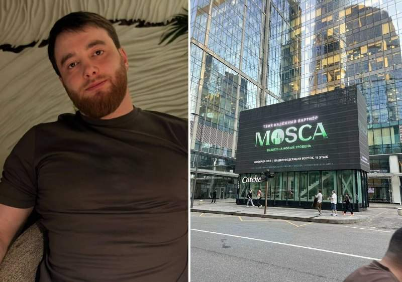
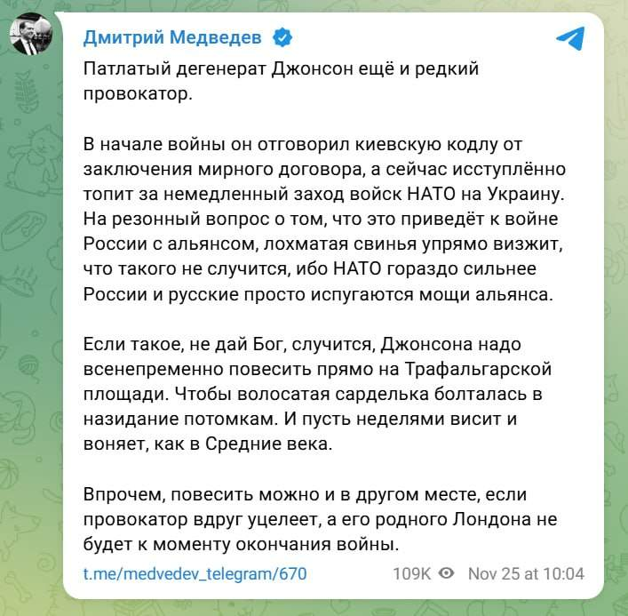
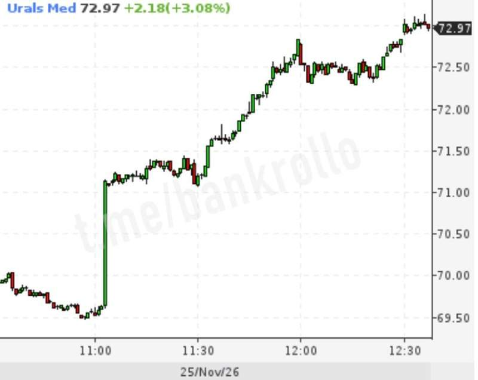
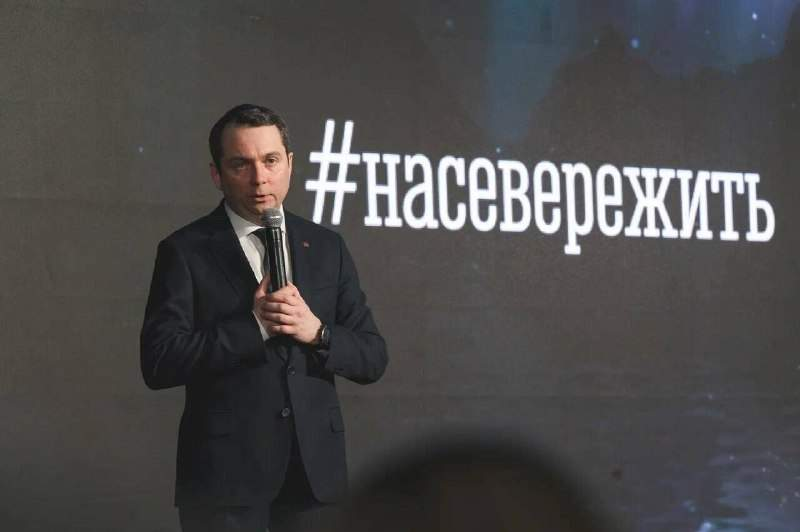
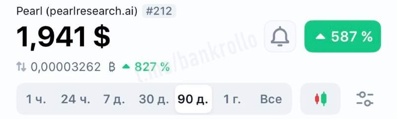
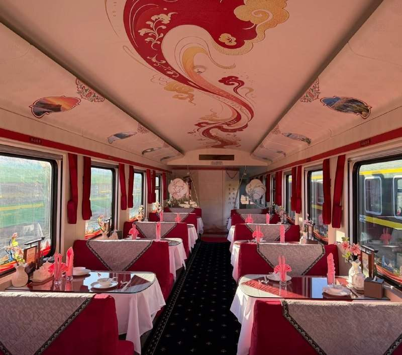

На Арбате горит элитный ЖК с квартирами до 869 млн рублей. Комплекс должны были сдать до конца года. @bankrollo
На Арбате горит элитный ЖК с квартирами до 869 млн рублей. Комплекс должны были сдать до конца года. @bankrollo
ФНС добралась даже до зеков. С 1 июля 2027 года налоговая начнёт получать данные об осуждённых напрямую от колоний и СИЗО. Сейчас ФНС недовольна, что заключённые часто не могут заплатить налоги, потому что не получают уведомлений. Теперь уведомления о налогах и требования погасить задолженность будут приходить заказными письмами прямо в колонии. Заплатить налоги зеки смогут со своего лицевого счёта в колонии или попросить об этом родственников. Власти рассчитывают повысить собираемость налогов. @bankrollo

Владельца криптообменника MoscaEx Саида Сурхаева задержали по делу о похищении человека, пишет Mash. По версии следствия, он вместе с сообщниками около 12 часов удерживал и избивал мужчину, который кинул обменник на миллионы долларов. Теперь Сурхаеву грозит до 12 лет колонии. @bankrollo

Медведев призвал повесить «волосатую сардельку» на Трафальгарской площади в Лондоне. Так он назвал бывшего премьер-министра Великобритании Бориса Джонсона. @bankrollo
Эстония и Россия находятся на грани начала открытой войны — МИД России. Российские власти обвинили Эстонию в попытках организовать морскую блокаду России и в предоставлении своего воздушного пространства для украинских дронов, а также в преследовании русскоязычного населения. @bankrollo
Генпрокуратура взялась за чиновников-взяточников из 90-х. Ведомство просит обратить в доход государства $1,15 млн, которые, по версии ведомства, бывший замминистра внешних экономических связей России Догаев получил в качестве взяток в 1990-е годы, узнал Интерфакс. Догаев работал в министерстве с 1991 года, а в 1994–1995 годах занимал должность заместителя его руководителя. В круг его полномочий входили вопросы лицензирования экспорта и импорта, распределения и аукционной продажи экспортных квот. @bankrollo

Подготовить бюджет к снижению цен на нефть до $50 за баррель призвал Силуанов. По его словам, такая цена заложена в проект бюджета на 2027 год. Сейчас нефть Urals стоит $73. @bankrollo

Суд арестовал губернатора Мурманской области Чибиса. @bankrollo
В России резко подорожают деликатесы. Минфин предложил ввести повышенную импортную пошлину в 15% на хамон, трюфели, морепродукты и ряд других деликатесов. Сейчас эти товары облагаются по льготной ставке НДС 10%. Повышенная пошлина должна заработать с 2027 года. @bankrollo
Темщики начали оформлять Claude для россиян на узбеков, киргизов и таджиков. С октября нейронка массово требует от пользователей подтвердить личность, но пройти проверку по российским документам нельзя. Теперь темщики оформляют аккаунты на мигрантов из стран СНГ за 4–5 тысяч рублей. Те присылают свои документы и проходят верификацию за россиян. @bankrollo
Лукашенко усомнился, что украинские территории исторически принадлежат России. Если руководствоваться такой логикой, то всю Россию придётся вернуть Монголии, ведь когда-то русские земли принадлежали монголам и татарам, считает белорусский президент. По его словам, Путин прекрасно это понимает. @bankrollo
Россиянину вернули крипту впервые после решения Конституционного суда, пишет Коммерсантъ. В 2023 году мужчина купил 1 тысячу USDT и передал их в управление другому лицу. Не получив активы обратно в установленный срок, он обратился в суд. Тогда все инстанции отказали ему в защите со ссылкой на закон о цифровых финансовых активах. Однако со вступлением в силу 1 сентября закона о регулировании криптосферы дело было пересмотрено и суд постановил вернуть потерпевшему крипту. @bankrollo
Европа выдвинула новые предварительные условия для переговоров с Россией, заявила Урсула фон дер Ляйен. Среди них — «энергетическое перемирие» на всю зиму и новая сделка по свободному проходу судов в Чёрном море. @bankrollo
Беларусь не была плацдармом России для атаки на Украину — Лукашенко. Просто российские войска после учений почему-то повернули на Киев, а не вернулись домой, пояснил он. «Мы к этой войне не имеем отношения. Я не знал о начале войны, и Генштаб России меня в это не посвящал», — добавил Лукашенко. @bankrollo
«Нет совести у тех, кто это делает». В Госдуме возмутились ростом тарифов ЖКХ. @bankrollo https://t.me/bankrollo/68236 Володина возмутило падение продаж жилья в России и рост цен. «Это что, рынок? Рынок — это когда стоимость снижается, если спроса нет. А сейчас как раз спрос упал, значит стоимость должна снижаться». @bankrollo
64% дата-центров в России не хватает электричества. Недостаток мощности стал проблемой для развития новых ЦОД для 48,5% участников рынка, показал опрос. Теперь половина респондентов создают собственную генерацию или изучают такую возможность. @bankrollo
Основатель финтех-группы «Баланс-Платформа» Леван Назаров мог консолидировать около 20% акций Циана на 14–15 млрд рублей, пишет Коммерсантъ. Назаров подтвердил покупку и назвал её стратегической инвестицией в технологическом секторе. Так Циан получит технологического инвестора с успешным опытом в финтех-продуктах. Назаров участвовал в IPO Ozon и Циан, а в его группу входит ипотечный брокер ДВИЖ, который обслуживает 75 из 100 крупнейших застройщиков России. Через этот сервис банки выдали ипотек более чем на 1,5 трлн рублей. С начала года по октябрь акции Циан выросли на 21%, тогда как индекс Мосбиржи снизился на 9%. Гендиректор «Infoline-Аналитика» Михаил Бурмистров считает вложение Назарова потенциально выгодным, а эксперты отмечают устойчивость Циана и лидирующие позиции в своём сегменте даже в условиях нестабильного рынка недвижимости. @bankrollo
Гордон Рамзи станет новым ведущим Top Gear. Перезапуск шоу выйдет в 2028 году. @bankrollo

Криптаны создали ИИ-биткоин. Криптовалюта Pearl (PRL) построена на коде биткоина, но добывается с помощью математических операций, которые используются при обучении и работе ИИ. Майнить монету можно даже на игровых видеокартах. С начала ноября Pearl подорожал на 40%, когда весь остальной рынок крипты рухнул. За последние 90 дней Pearl взлетел на 800%. @bankrollo
«Мстители: Доктор Дум» уже собрал больше $100 млн на предпродаже билетов только в США за три недели до старта сеансов. @bankrollo

Из России в Китай запустили поезд впервые за 6 лет. Билет из Иркутска до Пекина стоит 27 тысяч рублей, а поездка займёт 55 часов. Пять часов поезд идёт вдоль Байкала. @bankrollo
Нейросети могли взломать один из главных алгоритмов защиты интернета. В научном сообществе уже около десяти дней ходят слухи, что OpenAI или Anthropic удалось решить математическую задачу, над которой человечество билось десятилетиями. На ней основан алгоритм RSA, используемый для защиты банковских, государственных и корпоративных систем. Если слух подтвердится, мир может столкнуться с крупнейшим кризисом кибербезопасности в истории. Хакеры смогут подделывать электронные документы и подписи, выдавать вредоносные программы за официальные обновления, имитировать настоящие сайты банков, а спецслужбы — расшифровывать часть секретных данных, собранных за десятилетия. Профессор Техасского университета Скотт Ааронсон уверен, что ИИ-лаборатории уже взломали алгоритм, пока не обнародовали сенсационное достижение. @bankrollo
Почти 40 млн жителей ЕС не могут позволить себе нормально отапливать жильё. По данным Евростата, в 2025 году с температурой ниже комфортной столкнулось 8,8% населения ЕС. Хуже всего ситуация обстоит в Греции, Литве, Болгарии и Испании. @bankrollo
Губернатор Мурманской области получил взятку аэролодкой за 8,5 млн рублей. По данным «Коммерсанта», местный бизнесмен Оганес Шанкоян подарил Андрею Чибису аэролодку «Север-650», а также заплатил 11 млн рублей за подготовку презентации с отчетом о работе областного правительства. Чибиса обвиняют во взятках и растрате около 1 млрд рублей. @bankrollo
Минцифры создаст платный аналог GitHub. Сервис будет обязательным для всех разработчиков доверенного софта — банков, госорганов, энергетических, транспортных и телекоммуникационных компаний. Компаниям придётся платить за пользование репозиторием, а за дополнительные функции — ещё доплачивать. Это уже третья попытка создать отечественного «убийцу» GitHub. @bankrollo
Путин гроссмейстер мира политики — спецпосланник США Кушнер. @bankrollo
ФНС добралась до французского Google. Когда Google обанкротился в России, выяснилось, что компания годами выводила почти всю выручку в своё ирландское подразделение. Московский суд признал часть этих платежей незаконными и обязал ирландский Google вернуть российскому 160 млрд рублей с учётом процентов. По совпадению французский Google оказался должен ирландскому примерно такую же сумму. Российская сторона добилась ареста этого долга через суд во Франции. Теперь деньги, которые французский Google должен ирландскому Google, могут достаться кредиторам российского Google. Крупнейший из них — ФНС. @bankrollo
Хакеры взломали 1Password, один из самых популярных менеджеров паролей в мире. Хакеры украли исходный код сервиса, имена и почты пользователей и даже токены для восстановления доступа к аккаунтам. @bankrollo